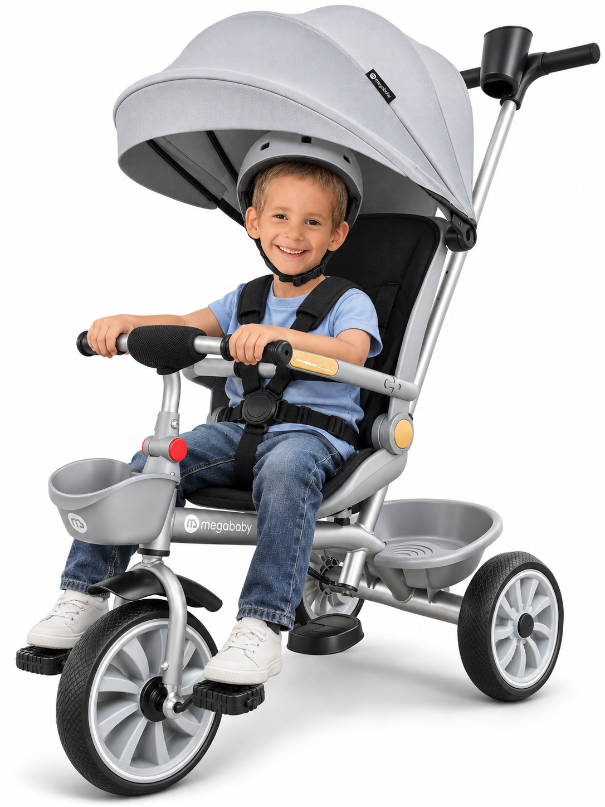
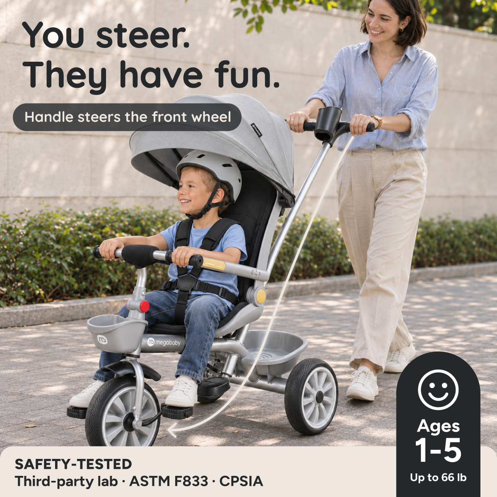
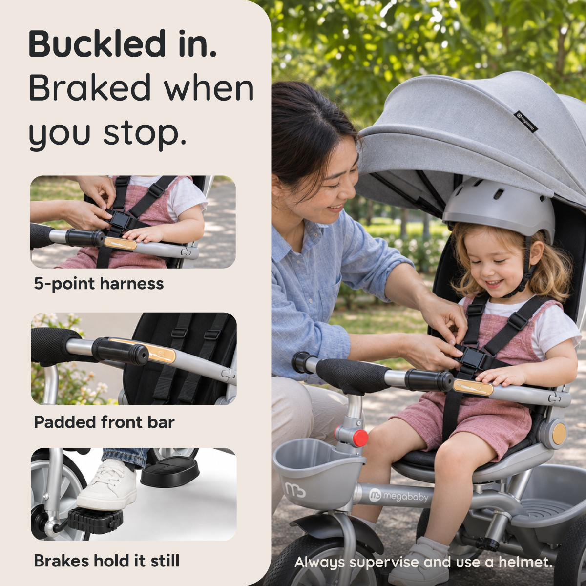
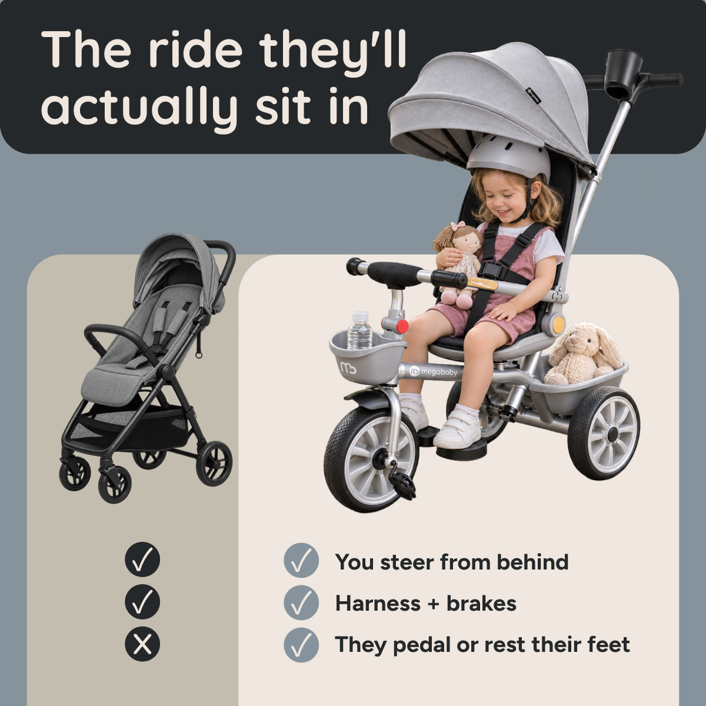
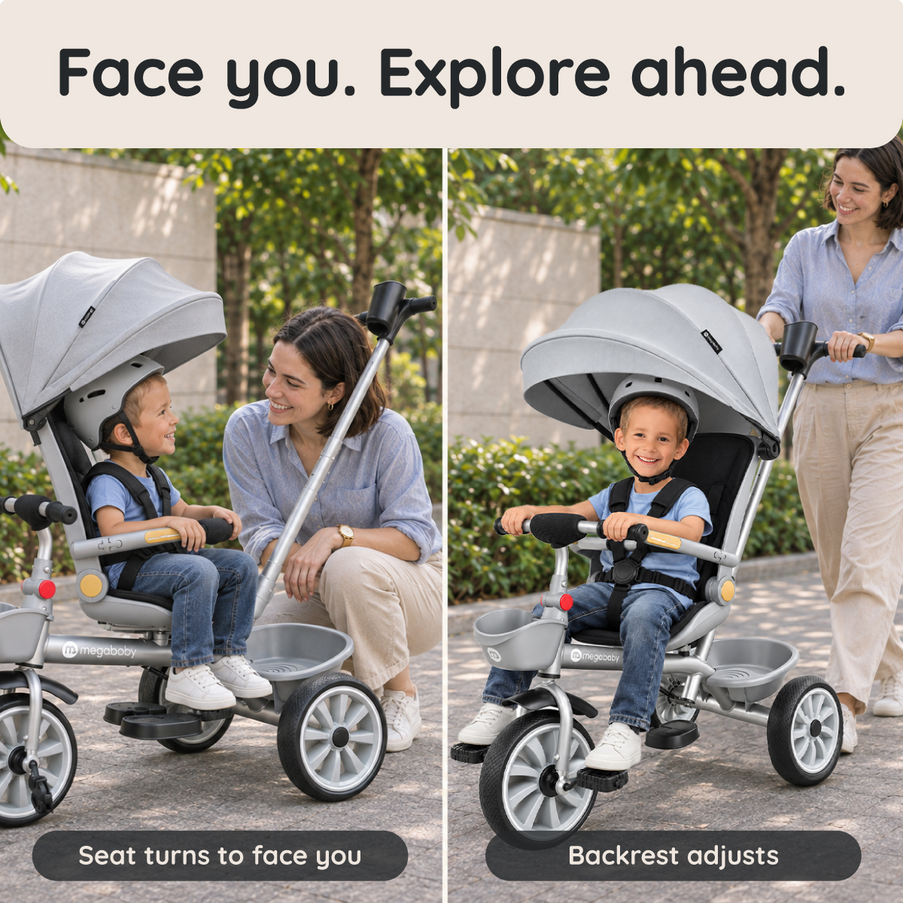
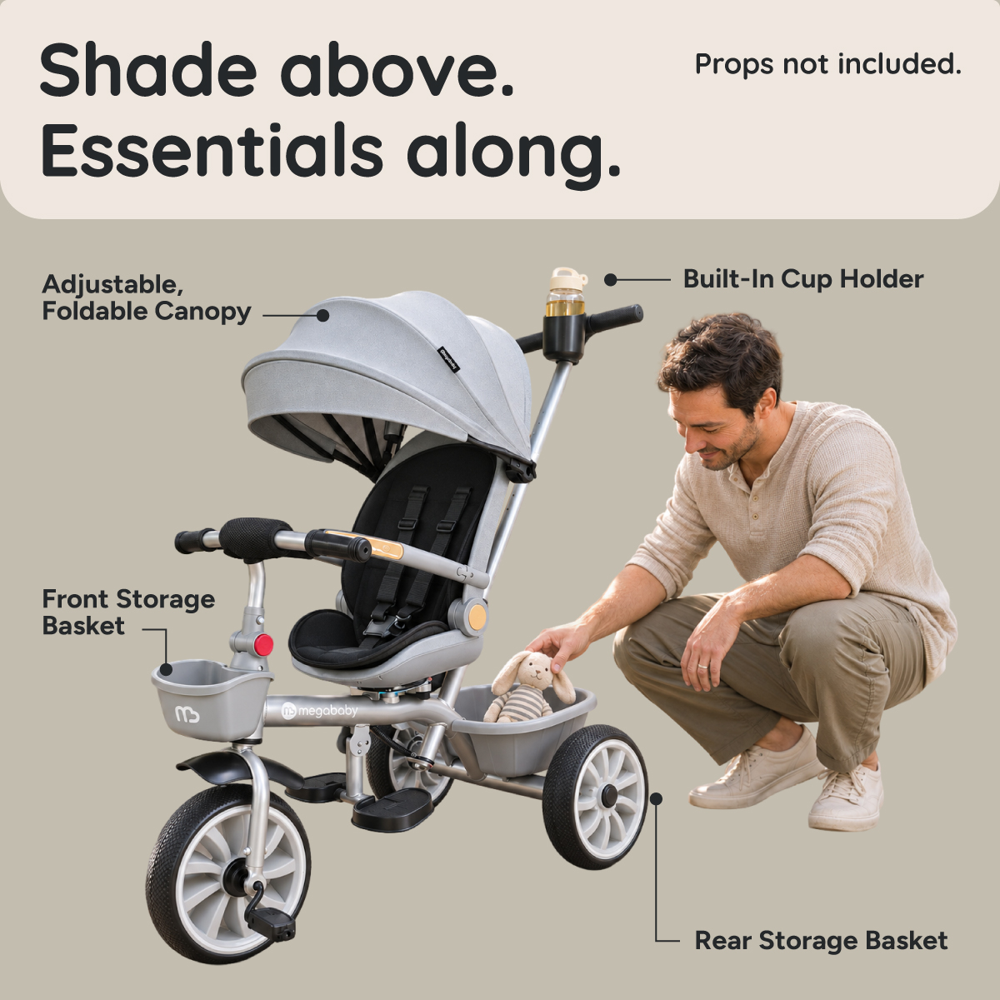
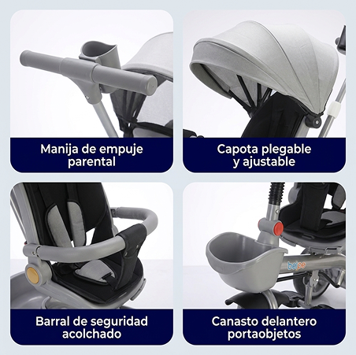
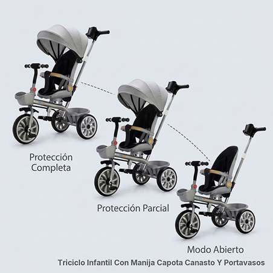

3 de noviembre de 2026. Les compartimos las imágenes terminadas, por qué cada una dice lo que dice, y las fotos que necesitamos para cerrar las que faltan.
A la mamá cuyo hijo de 1 a 3 años ya no quiere ir en el cochecito y todavía no pedalea. En sus palabras: WORTH IT, especially if toddler hates a stroller
. El segundo comprador son los abuelos que lo regalan para el primer cumpleaños.
Le preguntamos a Alexa for Shopping qué frena la compra en los dos líderes (JMMD y EOOWOY). La duda madre es que la manija del adulto maneje y no se afloje. La sigue que le quede chico al nene.
5 de 6 competidores usan la segunda imagen para una rueda de modos ("8-in-1"). Nosotros la usamos para responder esa duda, y somos los únicos que muestran el test de laboratorio en la galería.

Duda que responde: ¿qué es?

Duda que responde: ¿la manija maneja de verdad? ¿Es seguro? ¿Le va a quedar chico?
slides down without pushing the button) y aparecen quejas de ruedas que no siguen a la manija. Por eso la primera prueba es que la manija conecta con la rueda delantera, con una línea que se ve.
size runs small. Las 66 lb de peso máximo responden eso y son las más altas del set: solo EOOWOY muestra peso, y es 55 lb.

Duda que responde: ¿el arnés aguanta? ¿Se queda quieto cuando paro?
the safety belt connector came clean off. Mostramos las 5 correas y a la mamá abrochándolas.
there is no brake, so it can be dangerous to let go when stopping. El titular responde justo eso: el triciclo no se va cuando ella para.

Duda que responde: ¿es un triciclo o me reemplaza el cochecito?
It's literally the only stroller he'll sit in for more than 5 minutes.
Thin, weak steel tubes). Nosotros comparamos contra el cochecito: todo lo que la mamá ya confía, más lo que al chico le encanta.

Duda que responde: ¿lo puedo ver mientras andamos?
bonding) como una de las razones para elegir triciclo en vez de cochecito.

Duda que responde: ¿qué trae para salir?
Duda que responde: ¿y si todavía no pedalea?
front pedal clutch). Nosotros lo contamos desde el chico: los pies descansan y los pedales no giran debajo de ellos.
Duda que responde: ¿se lava?
Duda que responde: ¿qué recibo? ¿Entra en casa? ¿Le va a quedar chico?
Size runs smalles la queja número uno de JMMD. Con la altura del asiento, la mamá decide antes de comprar si le va a quedar bien.
Estas son las fotos de detalle que tenían en los renders iniciales, pero no están entre las fotos que nos pasaron. Las necesitamos como fotos reales con fondo blanco, en alta resolución (2000 px o más).


| Foto | Para la imagen |
|---|---|
| Barra de seguridad | 9 |
| Manija de empuje | 9 |
| Capota | 9 |
| Canasto delantero | 9 |
| Canasto trasero | 9 |
| Barral poniéndose y sacándose | 9 |
| Broche del cinturón | 9 |
| Mano abrochando el cinturón | 9 |
| Cinturón | 9 |
| Asiento acolchado puesto | 8 |
| Mano sacando el asiento (para lavar) | 8 |
| Mano sacando o poniendo el apoyapiés | 7 |
| Dato | Dónde se usa | Quién |
|---|---|---|
| ¿Asiento y arnés sirven desde los 12 meses? | Imagen 2 ("Ages 1–5") | Falta confirmación del cliente |
| ¿Dónde están los frenos y quién los acciona? | Imagen 3 | Falta confirmación del cliente |
| Foto del control que desacopla los pedales | Imagen 7 | Falta confirmación del cliente |
| Medidas armado, altura del asiento y distancia asiento-pedales | Imagen 9 | Falta confirmación del proveedor |